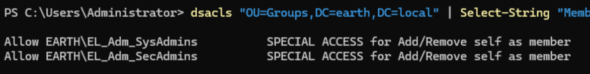
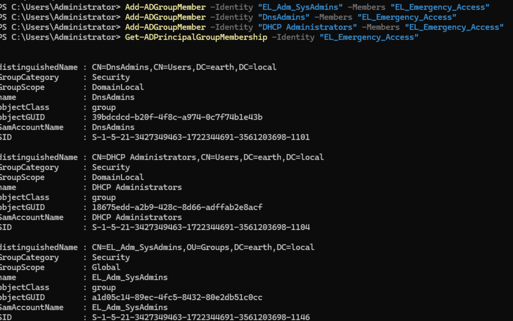
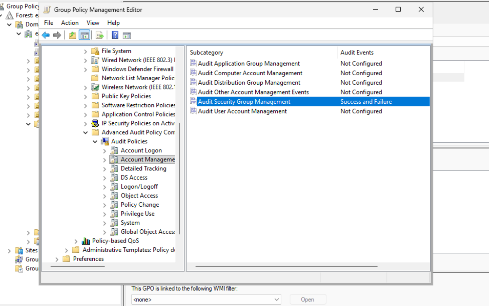
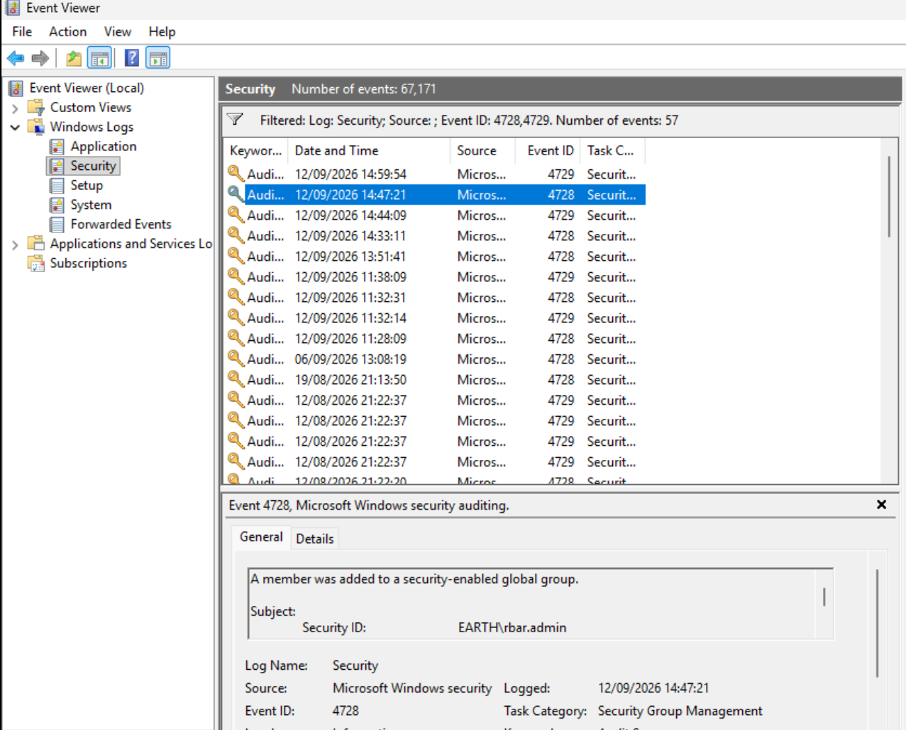
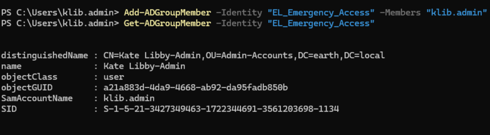
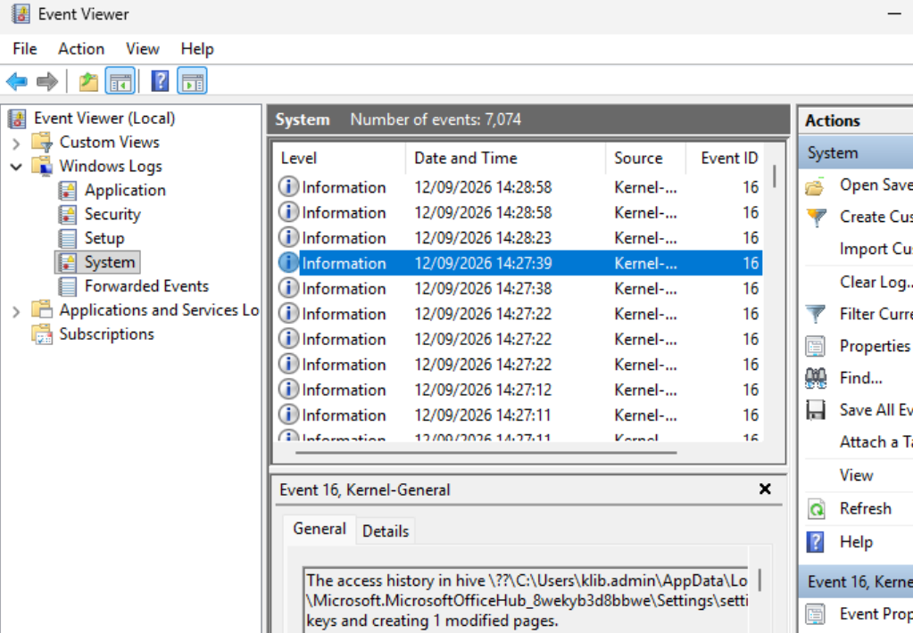
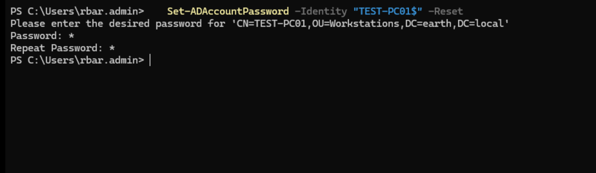
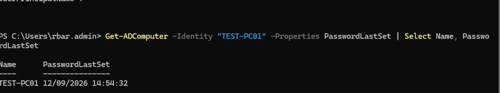

Emergency Acess
Testing — Emergency Access
The purpose of this role was to create a security group that could fulfil some of the other groups' tasks in an emergency.
Design decision — no Admin Tier IT Manager
Initially I planned for an Admin Tier IT Manager to fulfil this role, but decided against that, as it would have created almost a "god" role, breaking least privilege.
The group would have no standing members by default, but when required, a user can be assigned to the group to complete the required tasks, then removed. Only EL_Adm_SysAdmins and EL_Adm_SecAdmins would have the ability to move a user in and out of EL_Emergency_Access, and they are primarily the groups who would use EL_Emergency_Access.
By running:
dsacls "OU=Groups,DC=earth,DC=local" | Select-String "Member"
I was able to confirm that only EL_Adm_SysAdmins and EL_Adm_SecAdmins could modify group membership.

Design: EL_Emergency_Access is nested into the same existing admin-tier groups the other roles already use, rather than being granted a separate, parallel permission set.
Accomplished via:
Add-ADGroupMember -Identity "EL_Adm_SysAdmins" -Members "EL_Emergency_Access"
Add-ADGroupMember -Identity "DnsAdmins" -Members "EL_Emergency_Access"
Add-ADGroupMember -Identity "DHCP Administrators" -Members "EL_Emergency_Access"
# EL_Adm_SecAdmin nesting once that group's rights are fully finalised (patch/deployment rights still deferred)
Validated via:

Logging
I wanted to set up simple logging, so that whenever users are added to groups I could see who did what (the auditing of this can be improved once a SIEM is built). This way the EL_Emergency_Access group could be audited cleanly.
To do this I ran: Win + R > gpmc.msc > Computer Configuration > Policies > Windows Settings > Security Settings >
Advanced Audit Configuration > Audit Policies > Account Management
I then enabled Audit Security Group Management for Success and Failure events, and ran gpupdate /force on the domain controllers to apply the changes.

After the next section "Validating", where I validated the access, I came back here to check the logs.
I ran: Win + R > eventvwr > Windows Logs > Right-click Security > Filter Current Log >
entered 4728, 4729 in the <All Event IDs> section > OK
I was able to confirm the group addition and removal of both users I tested with.

Validating
I logged in to Kate Libby's admin account to move this same account into the EL_Emergency_Access group via:
Add-ADGroupMember -Identity "EL_Emergency_Access" -Members "klib.admin"
Verified the move via:
Get-ADGroupMember -Identity "EL_Emergency_Access"

I then tried to read an event log, as the EL_Adm_SecAdmins group could do this. I was able to review some logs to validate.

I then removed her from the Emergency group and signed in as Rache Bartmoss to test with a SecAdmin.
With Rache, I ran:
Set-ADAccountPassword -Identity "TEST-PC01$" -Reset
Which would work for an elevated SysAdmin. Initially it failed even after I signed out and back in before running the command. After restarting the machine and running the same command, I saw no error output.
Sign-out/sign-in did not refresh the token, a restart did
A stale Kerberos token was not resolved by signing out and back in, but was resolved by a full restart. Worth remembering for future testing: if a permission change doesn't appear to take effect after a normal logoff/logon, a full restart is a more reliable way to force a genuinely fresh security context before concluding the underlying delegation itself is wrong.


I then removed Rache from Emergency Access, re-ran the same command, and saw an error.
Emergency Access confirmed working and correctly revocable
Both EL_Adm_SysAdmins and EL_Adm_SecAdmins staff were able to gain the intended elevated capability once added to EL_Emergency_Access, and correctly lost that capability once removed. Group additions and removals were both captured in the Security event log (4728/4729), confirming the access is auditable without requiring a SIEM.
Final Validation Summary
| Test | Expected result | Actual result | Status |
|---|---|---|---|
Only EL_Adm_SysAdmins/EL_Adm_SecAdmins can modify group membership |
Confirmed | dsacls on Groups OU showed only these two groups with Member write access |
Pass |
EL_Emergency_Access nested into EL_Adm_SysAdmins, DnsAdmins, DHCP Administrators |
Allowed | Confirmed via Get-ADGroupMember |
Pass |
| Security Group Management auditing enabled | Allowed | Configured via GPO, applied with gpupdate /force |
Pass |
| Group addition logged (Event ID 4728) | Logged | Confirmed in Security event log for both test users | Pass |
| Group removal logged (Event ID 4729) | Logged | Confirmed in Security event log for both test users | Pass |
| SysAdmin-tier account via Emergency Access: read event logs | Allowed | Kate Libby's admin account successfully reviewed logs | Pass |
| SecAdmin-tier account via Emergency Access: reset computer password | Allowed | Rache Bartmoss's account succeeded after a full restart (see note on stale token) | Pass |
| Access correctly revoked after removal from Emergency Access | Denied | Same computer password reset failed once Rache was removed from the group | Pass |
Key Takeaways
This exercise reinforced several important lessons:
- Not every gap in a permission model should be filled by expanding an existing role. Rather than granting an IT Manager broad standing rights to cover emergencies, a separate, purpose-built, membership-empty group kept the least-privilege design intact while still solving the real problem.
- A break-glass or emergency access mechanism is meaningful only if it is auditable and revocable, not just grantable. Enabling Security Group Management auditing and confirming both the addition and removal of a test account in the event log made this a genuinely reviewable control, not just a standing elevated account with a reassuring name.
- Restricting who can add members to a sensitive group is itself a security control worth verifying explicitly; confirming via
dsaclsthat only the intended admin-tier groups could modify group membership ensured the emergency access mechanism could not be granted by an unauthorised account. - A stale Kerberos token can survive a normal sign-out and sign-in in some cases; a full restart is a more reliable way to force a fresh security context when a permission change doesn't appear to take effect, worth trying before concluding the underlying delegation is wrong.